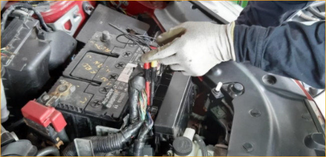
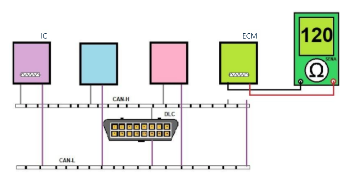
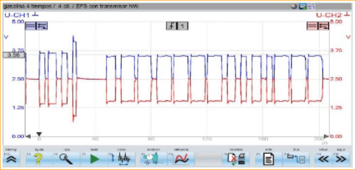
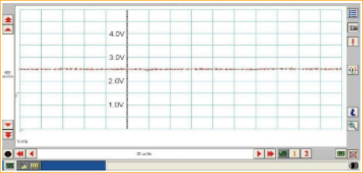
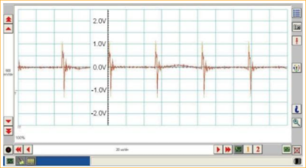
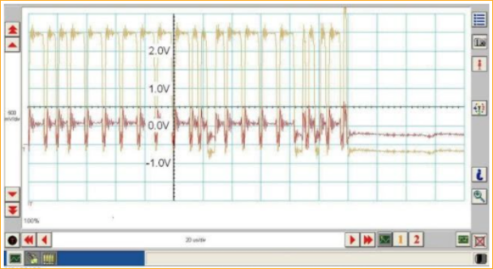
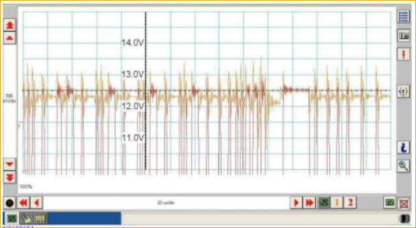
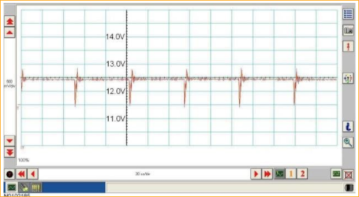
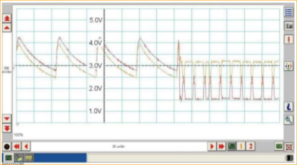

1. Fundamentos de métodos de análisis de fallas.
Todo fundamento de métodos de análisis de fallas, requiere del diagnóstico de una red CAN BUS, esta a su vez debe realizar algunos procesos previos a dicho diagnóstico.
Lo primero es realizar una buena entrevista al cliente y comprobar el fallo.
Segundo, se debe realizar una inspección sensitiva al vehículo (visual, táctil, olfativa, sonora).
Un tercer punto y que es supremamente importante, es comprobar el estado de la batería ya que, si no se encuentra dentro de los parámetros, puede generar fallos a los sistemas electrónicos entre ellos, y el de la red multiplexada.
El alto número de sistemas controlados en el vehículo requiere que la batería se encuentre siempre en buen estado de carga, cuando la batería responde adecuadamente se puede observar que se encienden las luces, suena el pito, y el motor de arranque, sin embargo, lo anterior no es buen criterio para juzgar su estado.
En este punto se debe referir, que las pruebas con multímetro son imprecisas para comprobar el buen estado de la batería, de otra parte, los probadores de descarga de baterías son poco efectivos para los actuales requerimientos técnicos del vehículo y de las baterías. Es de aclarar que cuando se utilizan los probadores de baterías, cuyo principio es la medida de la resistencia interna, las pruebas arrojadas son rápidas y precisas, teniendo en cuenta la norma técnica que regula la batería.
Volviendo al análisis de fallas, dentro del diagnóstico se debe comprobar los códigos de falla – DTC con el uso del scanner. Los códigos de falla- DTC asignados a comunicaciones inician con la letra U.
Luego de confirmar un fallo, se debe usar el osciloscopio para identificar con precisión la falla que está presente en el circuito y pues es la forma en que podrá ser corregida.
2. Técnicas de la verificación física de la red
La verificación física de la red radica en la función de los resistores, lo que se busca al final del proceso es que en el encuentro de líneas se destruyan las señales que se puedan reflejar (ecos) sin que perturben las otras emisiones de señales dadas por el sistema; a continuación, lo que debe arrojar el procedimiento:
A) Los resistores se encuentran conectados en paralelo, ello permite arrojar la medida del circuito que será de 60 Ohm.
B) Se debe tener todos los módulos del vehículo conectados, de forma que se pueda medir en el conector de diagnóstico – DLC, lo anterior, teniendo en cuenta que el circuito no cuente con interfaz (Gateway).
C) En caso de que el vehículo tenga interfaz (Gateway), se debe medir después de la interfaz.
Para proceder a medir la resistencia del circuito CAN, siempre se debe desconectar el negativo de la batería, tal como se muestra en la imagen.
D) De ser necesario, se debe encontrar la ubicación de los resistores de final de línea, ya que en varios diagramas no la muestran, por tanto, se debe medir en cada uno de los módulos de control en los pines que indica el manual.
El siguiente gráfico muestra la manera de medir la resistencia individual o de identificar su ubicación.
En la foto, se observa al técnico tomando la señal de CAN BUS desde el módulo de motor.
Para complementar la información favor visualizar el siguiente video: Medir resistencia de la red
3. Características de las fallas de las redes CAN BUS
La verificación física de la red radica en la función de los resistores, lo que se busca al final del proceso es que en el encuentro de líneas se destruyan las señales que se puedan reflejar (ecos) sin que perturben las otras emisiones de señales dadas por el sistema; a continuación, lo que debe arrojar el procedimiento:
Señal correcta de la red CAN BUS
Al analizar la señal de CAN BUS se hace necesario compararla con una señal conocida en buen estado, dichas señales son: la señal CAN-L y la señal CAN-H.
La señal CAN-L presenta unas medidas de entre 1,25 Volts a 2,50 Volts y la señal CAN-H entre 2,50 Volts y 3,75 Volts, suficientes para realizar la comparación y obtener la correcta señal.
Cuando se obtiene una señal correcta, esta tiene las siguientes características: es limpia y sin la presencia de ruidos o interferencias, a la imagen a continuación muestra dicha señal, que ha sido arrojada por la Red de CAN BUS.
Corto circuito entre las líneas CAN-H y CAN-L
De otra parte, puede suceder que no se dé una buena comunicación entre las líneas CAN-H y CAN-L. En caso de que las dos líneas del Bus se toquen, sus tensiones se promedian, lo anterior con la intención de saber la tensión resultante, generalmente, cuando sucede algo así la tensión resultante será de 2,5 Volts.
Hay que tener en cuenta que, si la medida solo se hace con voltímetro, este será el voltaje obtenido cuando exista un buen funcionamiento.
Una forma de revisar fallas resultantes entre líneas es a través del uso de un osciloscopio. La señal medida en el osciloscopio como se ve en la imagen, genera una línea constante en 2,5 Volts, lo cual representa la falla analizada, por tanto, esta falla hará que se pierda la comunicación completamente entre las líneas. El grafico muestra como se vería en el tablero el cortocircuito entre las líneas.
¿Qué pasa cuando se cortocircuita cada línea, o se presenta una tensión?
A continuación, se explica por separado el resultado y se muestran visualmente cómo se visualiza en el osciloscopio.
A) Cortocircuito a tierra de la línea CAN-H
Si el circuito CAN-H se cortocircuita a tierra, ocasiona que tanto la señal de CAN-H como CAN-L la señal sea baja 0 Volts y de igual manera la comunicación. En el tablero la imagen se vería de la siguiente manera:
B) Corto a tierra de la línea CAN-L
Si el circuito CAN-L se cortocircuita a tierra su señal será baja 0 Volts. La señal pico de CAN-H tendrá cerca de 3,0 Volts, pero su baja tensión llegará a 0 Volts, en lugar de 2,5 Volts como es lo normal. La grafica muestra esa baja en los picos, por debajo de la línea.
C) Corto a tensión de la línea CAN-H
También puede presentarse el caso de un cortocircuito de la línea CAN-H a tensión de batería B+. En el oscilograma la tensión es de 12,0 Volts, en este caso tal como se muestra en el tablero la comunicación se transmite con dificultad.
D) Corto a voltaje B+ en la línea CAN-L
Si la línea de CAN-L, se encuentra en cortocircuito a batería (B+), los dos circuitos CAN-H y CAN-L se alinean a 12,0 Volts y no hay transmisión de mensajes, por tanto, los picos son negativos y se muestran por debajo de la línea.
E) Señal corrupta del circuito CAN
El par de líneas del Bus (CAN-L y CAN-H) se encuentran entorchadas, es decir sus cuerdas están cubiertas la una con la otra, lo que permite anular la probabilidad que su señal pueda ser interferida por señales como las del alternador, el sistema de alta tensión del encendido, motores o solenoides en general.
Sin embargo, cualquier debilidad del sistema puede ser aprovechada para que estas señales se filtren en las comunicaciones anulando la credibilidad de los mensajes, lo que se conoce como señal corrupta del circuito CAN.
Hay que tener en cuenta que cuando el técnico tome las señales, debe revisar muy bien el entorchamiento, porque los cables en mal estado del osciloscopio pueden mostrar señales corruptas sin estarlo. De igual manera, debe fijarse que la puesta de la tierra de los cables genere una señal conocida y firme.
Para complementar la información favor visualizar el siguiente video: Reconocer las diferentes fallas de la señal CAN BUS
Glosario
Controlador:Conocido en inglés como device driver. Dispositivos electrónicos que permiten interactuar con otros componentes.
Corrupción:Distorsión de las señales de un circuito electrónico debido a interferencias electromagnéticas generadas por fuentes externas.
Multiplexado:Circuito que permite reducir el número de cables para transmitir señales.
Perturbar:Acción que ocasionan las interferencias electromagnéticas en las señales de los circuitos electrónicos.
Referencias bibliográficas
Red de comunicaciones (2010). Manual Ford Expedition.
Fotografías y vectores tomados de https://www.shutterstock.com/ y https://www.freepik.es/
Licencia Creative Commons
CC BY-NC-SA
Ver licencia.